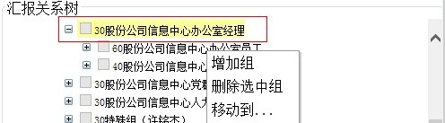
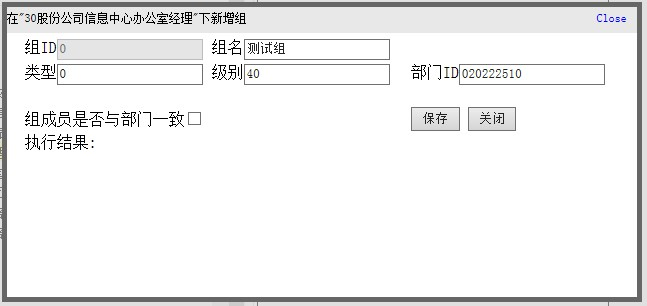
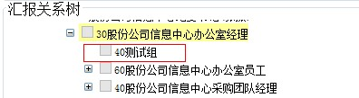
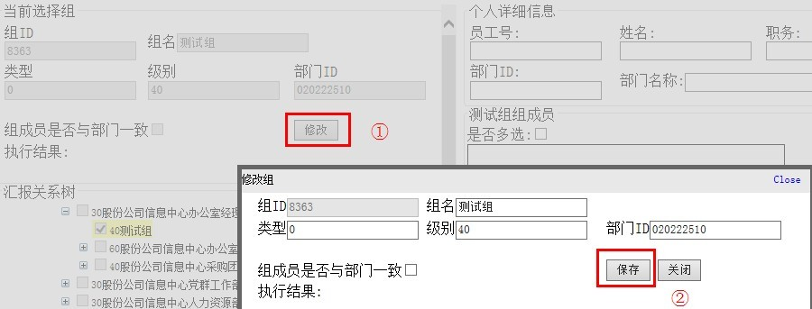
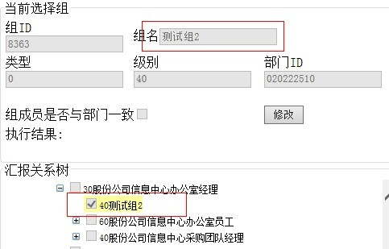
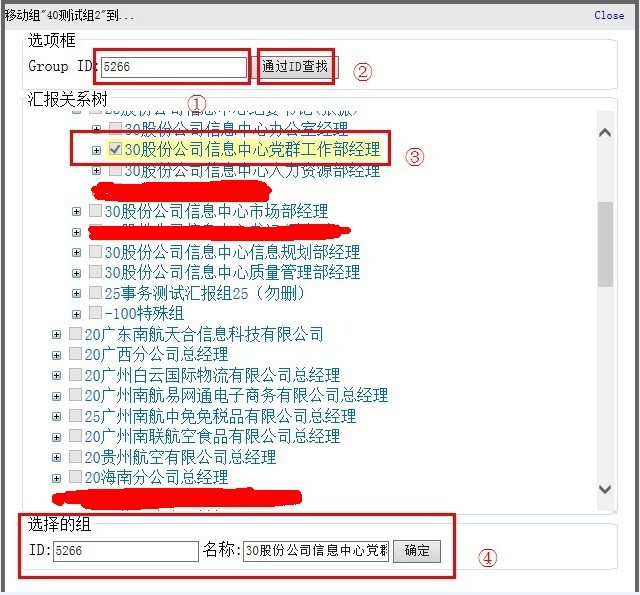
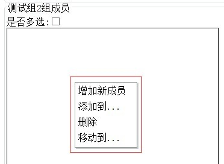
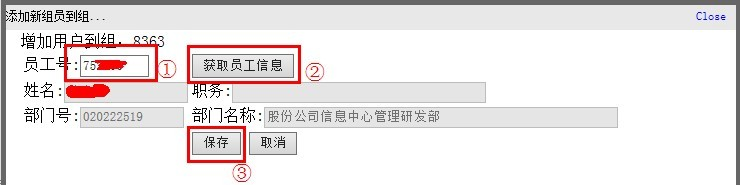
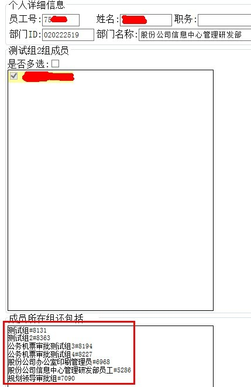

汇报树使用说明
·新增汇报组
·修改汇报组
·移动汇报组
·删除汇报组
·新增汇报组成员
·移动汇报组成员
·删除汇报组成员
新增汇报组：
步骤一：点击“查找组信息请点击我”①——>弹出框后在②、③、④框中输入相应的信息，点击“查找”——>在结果中勾选要新增的组的父级组⑤——>点击“定位到选择的组”⑥按钮，以便找到对应组（也可以直接点击“汇报关系树”框中的+号按钮逐级打开找对应组），如下图1

图1
步骤二：在“汇报树”框中点击鼠标右键,并点击“增加组”，如下图2

图2
步骤三：在弹出框中输入组的相关信息（组级别和部门ID都有相应的默认值），如下图3

图3
新增成功后结果如下图4

图4
修改汇报组：
步骤一：（同新增汇报组的步骤一）
步骤二：选中对应组后点击“修改”按钮①，在弹出框中输入相关信息（属性说明同新增汇报组的步骤三）,点保存②，如下图5

图5
修改成功后结果如下图6

图6
移动汇报组：
步骤一：（同新增汇报组的步骤一）
步骤二：右键点击“汇报关系树”框，选择“移动到”
步骤三：弹出框后在groupid输入框中输入组ID①，并点击“通过ID查找”按钮②（或可直接点击“汇报关系树”框中自行定位），之后选中其中一个组作为父组，并点确定④。如图7

图7
删除汇报组：
步骤一：（同新增汇报组的步骤一）
步骤二：右键点击“汇报关系树”框，选择“删除选中组”即可
新增汇报组成员：
步骤一：（同新增汇报组的步骤一）
步骤二：右键点击右侧的“测试组2组成员”框，如图8

图8
步骤三：选择“增加新成员”，在弹出框中输入员工号①，点击“获取员工信息”按钮②，确认后点“保存”③，如图9

图9
新增成功后结果如下图4

图10
移动汇报组成员：
步骤一：（同新增汇报组的步骤一）
步骤二：（同新增汇报组成员的步骤二）
步骤三：选择“移动到”，在弹出框中操作如同移动汇报组的步骤三
图9
删除汇报组成员：
步骤一：（同新增汇报组的步骤一）
步骤二：（同新增汇报组成员的步骤二）
步骤三：选择“删除”即可